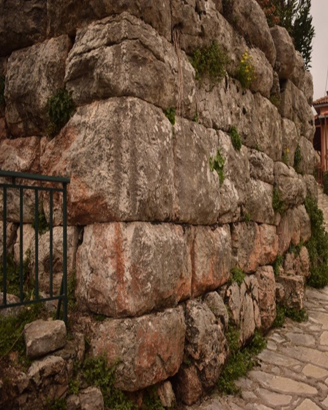

Η πρόταση αφορά την ανάδειξη σημείων ενδιαφέροντος εντός του Δήμου Πειραιά.Η επιλογή των σημείων γίνεται με βάση την προσβασιμότητα, την ιστορική,
πολιτιστική και καλλιτεχνική αξία.
Στόχοι:
○ Η δημιουργία πρωτότυπων διαδρομών.
○ Η προώθηση του Δ. Πειραιά ως μιας περιοχής με μοναδική πολιτιστική ταυτότητα και δραστηριότητα.
○ Η ανάδειξη της ευρύτερης ιστορίας του Δ. Πειραιά ως μιας περιοχής ορόσημο της εποχής της νεωτερικότητας.
○ Η προσέλκυση επισκεπτών με πολιτιστικό ενδιαφέρον.
○ Η εμπλοκή των κατοίκων στην πολιτιστική ζωή του τόπου.
○ Η ανάδειξη των τοπικών επιχειρήσεων.
Η λέξη Πειραιάς προέρχεται από την αρχαία ελληνική γλώσσα και σημαίνει πέρασμα.
Σύμφωνα με έρευνες η περιοχή ήταν νησί και χωριζόταν από την Αττική με
Λιμνοθάλασσα.
Κατά την αρχαιότητα ο Πειραιάς ήταν ένας από τους τρεις δήμους της συμμαχίας
του Ηρακλή. Οι Δήμοι Πειραιά, Κερατσινίου και Νίκαιας είχαν κοινό ιερό
αφιερωμένο στον μυθικό ήρωα Ηρακλή. Η στρατηγική σημασία της περιοχής
αναγνωρίσθηκε από τον στρατηγό Θεμιστοκλή μετά την νίκη στη Ναυμαχία της
Σαλαμίνας το 480 π.Χ.
Ο Θεμιστοκλής είναι αυτός που θα θελήσει να οχυρωθεί ο Πειραιάς και να αποτελέσει το σημαντικότερο λιμάνι της εποχής. Τα τείχη και πολλά μνημεία της περιοχής γκρεμίστηκαν κατά την πολιορκία του Ρωμαίου στρατηγού Σύλλα. Ενώ αργότερα Γοτθικά φύλα θα λεηλατήσουν την περιοχή οδηγώντας στην ερημοποίηση.
Ο Πειραιάς αλλάζει διοικήσεις και ονόματα, οι Βενετοί θα τον ονομάσουν Πόρτο Λεόνε, οι Βυζαντινοί λιμάνι του Δράκου, οι Τούρκοι Ασλάν Λιμάν και το νεοσύστατο ελληνικό κράτος το 1835 θα του επιστρέψει το αρχαίο του όνομα : Πειραιεύς.
Στη νεότερη ιστορία του ο Πειραιάς θα φιλοξενήσει πλήθος προσφύγων από τον
Α παγκόσμιο πόλεμο και θα οργανώσει σθεναρή αντίσταση κατά την διάρκεια του
Δευτέρου Π.Π., θα γίνει σύμβολο της βιομηχανικής ανάπτυξης και της αστικής προόδου,
Με πληθώρα νεοκλασικών κατοικιών και αρχιτεκτονικών θαυμάτων του 20ου αιώνα, ο Πειραιάς
του 21ου αι υποδέχεται εκατομμύρια επισκεπτών ως το μεγαλύτερο λιμάνι της χώρας.
Όνομα και branding του πρότζεκτ :
To project port (a):
Το πρότζεκτ στηρίζεται στην κομβική σημασία της λειτουργίας του λιμανιού του Πειραιά για την σύνδεση της Ηπειρωτικής με τη νησιωτική Ελλάδα.
Λαμβάνοντας υπόψη τη σημασία της λέξης Port και Πόρτα ώστε να είναι
κατανοητή η ερμηνεία από ομιλούντες την ελληνική γλώσσα και μη.
Παράλληλα δίνεται η δυνατότητα να δημιουργηθεί λογότυπο γραφιστικά και διαφημιστικά με αφορμή τη σημασία του λιμανιού ως πόρτα σε νέες εμπειρίες ή ως πέρασμα σε άλλους τόπους.
Επιπλέον το πρότζεκτ με την επιλογή των διαδρομών ναι μεν
αναγνωρίζει την σημασία του λιμανιού αλλά ταυτοχρόνως αναγνωρίζει τον Πειραιά ως μια πόρτα στην πολιτιστική ζωή της περιοχής με πολλαπλές διαπολιτισμικές αναφορές.
Δίνεται σημασία στην αρχιτεκτονική της περιοχής, στην αρχαία, νεότερη και πρόσφατη ιστορία αλλά και σε κομβικά σημεία της πόλεως.
Ίσως η πιο παρεξηγημένη περιοχή της νεότερης Ιστορίας του Πειραιά.
Η περιοχή πήρε το όνομά της από την αντλία (τρόμπα) που ήταν τοποθετημένη από το 1860 σε πηγάδι, στην αρχή της οδού Αιγέως, (σημερινής 2ας Μεραρχίας) και εφοδίαζε με νερό τα πλοία.
Η Τρούμπα τη δεκαετία του ’50 – ’60 έζησε τη λεγόμενη «χρυσή εποχή» η οποία κράτησε περίπου 20 χρόνια. Η αρχιτεκτονική των σπιτιών ευνόησε τη δημιουργία οίκων ανοχής αλλά και των περιβόητων καμπαρέ που άφησαν εποχή, όπως το «Τζων Μπουλ» και το «Μπλακ Κατ».
Παράλληλα η Τρούμπα διατήρησε τη λαική της κληρονομιά και μεγαλούργησε
μουσικά δημιουργώντας ένα μοναδικό στον κόσμο ήχο : το Ρεμπέτικο.
Οι μεγάλοι ρεμπέτες μεγαλούργησαν, ο Μάρκος Βαμβακάρης, ο Παπαϊωάννου, ο Κερομύτης και ο Νίκος ο Πουνέντης, έπαιξαν μουσική την οποία αργότερα θαύμασαν μουσικές διάνοιες όπως ο Jimmy Hendrix.
To 1967 απαγορεύτηκαν όλες οι δραστηριότητες στην περιοχή. Η επανάγνωση της ιστορίας σήμερα δίνει τα εύσημα στην περιοχή τόσο για την άνθιση και εδραίωση της λαϊκής μουσικής όσο και για την αντιστασιακή της δράση κατά τον
2ο Παγκόσμιο Πόλεμο. (βλ. βιβλιογραφία).
Το Αρχαιολογικό Μουσείο του Πειραιά προσφέρει στον επισκέπτη την αντιπροσωπευτική και πλήρη εικόνα της ιστορίας της πόλης, που κατά την αρχαιότητα γνώρισε μεγάλη ακμή τόσο ως εμπορικό κέντρο της ανατολικής Μεσογείου όσο και ως πολεμικός ναύσταθμος της αρχαίας Αθήνας.
Το είδος των εκθεμάτων του, που προέρχονται κυρίως από την ευρύτερη περιοχή του Πειραιά και της αττικής παραλίας, και τα χρονικά όρια που καλύπτουν, από τη μυκηναϊκή έως και τη ρωμαϊκή εποχή, είναι αντιπροσωπευτικά της ιδιομορφίας, της σύνθεσης του πληθυσμού και της ιστορίας του Πειραιά. Οι συλλογές του μουσείου αποτελούνται κυρίως από ευρήματα ανασκαφών ή τυχαία ευρήματα και από παραδόσεις αρχαιοτήτων, ενώ έχουν εμπλουτισθεί και με τις δωρεές ιδιωτικών συλλογών, όπως της συλλογής Μελετοπούλου-Νομίδου και, πιο πρόσφατα, της Συλλογής Γερουλάνου.
Το μουσείο στεγάζεται σε διώροφο κτήριο, που πλαισιώνει στη δυτική και νότια πλευρά το ελληνιστικό θέατρο της Ζέας και έχει συνολικό εμβαδόν 1.394 τ.μ. Οι εκθεσιακοί του χώροι καταλαμβάνουν τις δέκα αίθουσες των δύο ορόφων (1.044 τ.μ). Το κτήριο του παλαιού μουσείου (330 τ.μ.), που βρίσκεται ακριβώς δίπλα, χρησιμοποιείται σήμερα ως αποθήκη γλυπτών, ενώ στον αρχαιολογικό χώρο του θεάτρου της Ζέας πρόκειται να λειτουργήσει υπαίθρια έκθεση γλυπτών
Τα ερείπια των οχυρώσεων βρίσκονται σε καλή κατάσταση ως σήμερα. Το 493 π.Χ. ο Θεμιστοκλής ξεκίνησε την κατασκευή οχυρώσεων γύρω από τον Πειραιά. Οι δύο κύριες πύλες των οχυρώσεων βρίσκονται στην είσοδο της σύγχρονης πόλης στην οδό του 34ου Συντάγματος.
Η Πύλη του Άστεως είναι η πιο δυτική πύλη, η οποία περικλείεται από τις οδούς
Πύλης, Ομηρίδου, Σκυλίτση και Κολοκοτρώνη. Ο κύριος δρόμος για τις μεταφορές προς την Αθήνα περνούσε μέσα από την Πύλη του Άστεως.
Ο σκοπός κατασκευής των Μακρών Τειχών ήταν η σύνδεση της Αθήνας με το επίνειό της. Τα Μακρά Τείχη (Βόρειο, Φαληρικό και το Μέσο ή Νότιο τείχος) δημιουργούσαν έναν ασφαλή διάδρομο ανάμεσα στην Αθήνα και τον Πειραιά για τον πληθυσμό της Αττικής κατά τον Πελοποννησιακό Πόλεμο.
Ο παράκτιος τομέας των οχυρώσεων. Κατασκευάστηκε από τον Κόνωνα το 394 π.Χ. και διατηρείται, ως σήμερα, ένα τμήμα του μήκους 2,5 χλμ. κατά μήκος της Πειραϊκής Ακτής.
Πολλοί από τους πύργους του τείχους διατηρούνται ως σήμερα.
Το ∆ηµοτικό Θέατρο βρίσκεται στο κέντρο της πόλης και κτίστηκε σε σχέδια
πιστής αντιγραφής του περίφημου θεάτρου Μπολσόι στη Μόσχα. Ο αρχιτέκτονας του έργου υπήρξε ο καθηγητής του Εθνικού Μετσόβιου Πολυτεχνείου Ιωάννης Λαζαρίμος.
Το Δημοτικό Θέατρο Πειραιά, κάνει τα επίσημα εγκαίνιά του, την Κυριακή του Θωμά στις 9 Απριλίου 1895, στις 10.30 το πρωί, μετά "περισσής λαμπρότητος". Η πρόσοψη του θεάτρου είχε διαμορφωθεί έτσι ώστε να μπορούν με ευκολία να παρκάρουν οι "βηκτώριες άμαξες" και τα λεγόμενα "Βιζ-α-βί", λεωφορεία της εποχής.
Το λευκό οικοδόμημα με το ναόσχημο πρόπυλο και τις τέσσερεις λεπτές - χωρίς ραβδώσεις - κορινθιακού τύπου κολώνες στην πρόσοψή του, γίνεται σημείο αναφοράς της πολιτιστικής ζωής της πόλης τόσο στον 19ο όσο και τον 20ο αιώνα.
Μορφολογικά, έχει τις αναφορές του στην αμιγή κλασικιστική παράδοση και είναι επηρεασμένο από τη γερμανική σχολή που εκπροσωπούσε ο Ερνέστος Τσίλερ.
Η σκηνή του θεάτρου θεωρείται ένα από τα ελάχιστα σωζόμενα δείγματα της εποχής μπαρόκ στην Ευρώπη, διαθέτει προσκήνιο και χώρο ορχήστρας ενώ η πλατεία, τα θεωρεία και οι εξώστες εξελίσσονταν σε τέσσερα επίπεδα. Την αίθουσα φώτιζε τεράστιος πολυέλαιος (σώζεται και σήμερα) που λειτουργούσε με γκάζι.
Από τον Ιανουάριο του 2014 στο Παλιό Ταχυδρομείο της οδού Φίλωνος 29 – Καραολή και Δημητρίου 14 στον 1ο όροφο, εκτίθεται μικρός αριθμός έργων νεοελλήνων ζωγράφων μεταξύ αυτών Νικόλαος και Περικλής Λύτρας, Κων/νος Μαλέας, Κων/νος Ρωμανίδης, Μιχαήλ Οικονόμου, Αλέξανδρος Χριστοφής και έπειτα από συστηματική μελέτη, τεκμηρίωση και συντήρηση από εξειδικευμένο προσωπικό, ανά τακτά χρονικά διαστήματα γίνεται ανάρτηση έργων νεότερων καλλιτεχνών εκ των οποίων σημαντική θα είναι η παρουσία των πειραιωτών ζωγράφων.
Στη Δημοτική Πινακοθήκη υπάρχει η συλλογή 80 γλυπτών του Γεωργίου Καστριώτη, συλλογή 156 έργων του Σταμάτη Λαζάρου, σημαντικά έργα των Βυζαντίου, Γεραλή, Κοκότση,, Βολανάκη,, κ.α. καθώς και πλούσιο υλικό του Μάνου Κατράκη.
Το κτίριο ανεγέρθηκε το 1889 ως ταχυδρομείο, ένας χώρος πνευματικής συνά-
ντησης των ανθρώπων. Η απόσταση και η ξενιτιά για τον Πειραιά είναι
έννοιες γηγενείς. Στο παλιό ταχυδρομείο ενώνονταν οι ξενιτεμένοι και οι ναυτικοί με τις οικογένειές τους. Σήμερα ο χώρος φιλοδοξεί να αποτελέσει
Πνευματική εστία συνάντησης παλαιών και νέων καλλιτεχνών με τους
κατοίκους της πόλης.
Το κτίριο αποτελεί έναν από τους νεοκλασικούς αρχιτεκτονικούς προορισμούς
της περιοχής.
Το Ναυτικό Μουσείο της Ελλάδος υπήρξε διακαής πόθος των ελλήνων πλοιάρχων
Του νεοσύστατου κράτους. Ήδη από το 1867 έγιναν προσπάθειες να δημιουργηθεί
ένας χώρος με σκοπό την αναζήτηση, περισυλλογή, διαφύλαξη και έκθεση των
ιστορικών κειμηλίων που αναφέρονται στους ναυτικούς αγώνες, καθώς και σε
κάθε θαλάσσια δραστηριότητα των Ελλήνων από την προϊστορική εποχή ως τις
μέρες μας.
Τα εγκαίνια του Μουσείου πραγματοποιούνται 4/08/1967. Μέσα από τις δράσεις
του μελετά και τεκμηριώνει την ναυτική ιστορία. Παράλληλα καλλιεργεί την
αγάπη για την θάλασσα και την προστασία της με σύγχρονες εκπαιδευτικές
μεθόδους και δράσεις.
Στην είσοδο του Μουσείου έχει ενσωματωθεί ένα τμήμα του αρχαίου τείχους του
Κόνωνος. Ο επισκέπτης μπορεί να θαυμάσει τον αύλειο χώρο με την αρχαία
Ιστορία και σύγχρονη ιστορία να ξεδιπλώνεται μπροστά του. Γλυπτά και σημαντικά
υπαίθρια εκθέματα όπως ο πυργίσκος του ιστορικού υποβρυχίου Παπανικολής
και άγκυρες πλοίων της εποχής της Ναυμαχίας του Ναβαρίνου. Στους εκθεσιακούς
Χώρους τα 2500 εκθέματα ταξιδευουν τον επισκέπτη από την προϊστορία στην
Σύγχρονη εποχή.
Στο χώρο του Μουσείου υπάρχει, επίσης, Ναυτική Βιβλιοθήκη ανοικτή στο κοινό
κατά τις ημέρες και ώρες λειτουργίας του, η οποία διαθέτει περισσότερους από 17.000
τόμους βιβλίων και περιοδικών με κύριο θέμα τη ναυτική ιστορία, επιστήμη και τέχνη.
Το Μικρολίμανο ή Φανάρι ή λιμένας Κουμουνδούρου, πρώην Τουρκολίμανο και
στην αρχαιότητα Λιμένας Μουνιχίας, αποτελεί σήμερα τουριστική τοποθεσία και περιλαμβάνεται στην ευρύτερη συνοικία της Καστέλας.
Βρίσκεται στα βορειοανατολικά της Πειραϊκής χερσονήσου συνορεύοντας με την συνοικία του Νέου Φαλήρου. Μόλις μπείτε στην καρδιά του Μικρολίμανου θα σας μαγέψει αυτή η γραφική και άκρως νησιώτικη εικόνα με τα σπίτια αμφιθεατρικά κτισμένα στο λόφο, ενώ δίπλα σας θα βλέπετε αγκυροβολημένα κότερα και μικρά καΐκια.
Τα δεκάδες μαγαζάκια που λειτουργούν κατά μήκος της παραλίας ολοκληρώνουν αυτή την εικόνα και αίσθηση νησιού.
Το φαγητό στο Μικρολίμανο φαίνεται πως τα τελευταία χρόνια έχει ανοίξει τους ορίζοντες του και είναι σε ετοιμότητα για να σας ταξιδέψει first-class στις κουζίνες του κόσμου, με διαβατήριο τα πιο γευστικά, αμιγώς επηρεασμένα ή απλώς πειραγμένα από τις διεθνείς κουζίνες, μενού.
Απολαμβάνοντας τη θέα και το θαλασσινό αεράκι, είτε επιλέξετε τις παραδοσιακές γεύσεις είτε πιο fusion πρότασεις.
Η Μαρίνα Ζέας βρίσκεται στον Πειραιά, στην ανατολική ακτή της χερσονήσου της Πειραϊκής. Η περιοχή της θάλασσας αποτελείται από δύο λιμάνια, το Πασαλιμάνι και τη Φρεατίδα. Σε σχέση με άλλες μαρίνες, η κίνηση εδώ είναι πιο αυξημένη χάρη στα πολλά καταστήματα μέσα στη μαρίνα και τον γύρω χώρο.
Κατά την αρχαιότητα υπήρξε ο μεγαλύτερος πολεμικός λιμένας της Αθήνας. Η περιοχή προ της πλατείας Κανάρη μπορούσε να φιλοξενεί
Διπλά πλοία ενώ υπολογίζεται πως σχεδόν όλος ο στόλος της Αθήνας φυλασσόταν εκεί.
Η Μαρίνα Ζέας είναι εκτός των άλλων, ένα σημείο ιδανικό για περιπατητική διαδρομή , καθώς στην πορεία του ο επισκέπτης έχει την δυνατότητα να απόλαυση την θέα της θάλασσας και του ουρανού.
Η πολυσύχναστη μαρίνα προσφέρει πολλαπλές γευστικές επιλογές
και διεθνείς κουζίνες. Εδώ έχετε την δυνατότητα να δοκιμάσετε Ιταλικές, Μεξικάνικες, Ασιατικές και Αμερικάνικες γεύσεις.
Η Πειραϊκή Χερσόνησος στην αρχαιότητα ονομαζόταν από τους Αθηναίους Ακτή και ήταν φημισμένη για τα πλούσια μεταλλεία της, εξαγόταν ο "Ακτίτη λίθος" ο οποίος χρησιμοποιήθηκε σαν υλικό κατασκευής στα Μακρά τείχη και σε όλα τα λιμενικά έργα του αρχαίου Πειραιά. Τα χρόνια της κλασσικής αρχαιότητας ήταν έντονα πυκνοκατοικημένη υπήρχαν και πολλές δεξαμενές συλλογής βρόχινου νερού για την ύδρευση των κατοίκων.
Συνορεύει στα βόρεια με την Καλλίπολη, στα ανατολικά με τον Άγιο Βασίλειο, στα δυτικά και νότια βρέχεται σε ένα τεράστιο μήκος από τον Σαρωνικό κόλπο δημιουργώντας την Πειραϊκή ακτή επί της Ακτής Θεμιστοκλέους.
Η Πειραϊκή προσφέρει την δυνατότητα για βόλτα στο ηλιοβασίλεμα αλλά και
παλιές και νέες γευστικές εμπειρίες. Την τιμητική τους έχουν τα ουζερί και
οι παραδοσιακές ταβέρνες που προσφέρουν κυρίως θαλασσινά. Εσωτερικοί
μετανάστες οι περισσότεροι ιδιοκτήτες έφεραν στην Πειραϊκή τις γεύσεις
και τις μυρωδιές του τόπου τους. Παραδοσιακά πιάτα από τις Κυκλάδες,
τα Δωδεκάνησα και την Κρήτη κάνουν την βόλτα του επισκέπτη μια
ανεπανάληπτη γευστική εμπειρία.
Συγκεντρωτικά:
Προτείνονται τρεις διαδρομές με σημείο αφετηρίας τον σταθμό Πειραιά. (Ηλεκτρικός και Μετρό). Οι διαδρομές είναι διαφορετικών χρονικών ορίων ώστε να δίνεται η δυνατότητα επιλογής στον επισκέπτη.
Για κάθε διαδρομή προτείνεται να υπάρχει διαφορετική σήμανση και
χρωματισμός ώστε να μην περιπλέκονται και να είναι εμφανές στον
Επισκέπτη- χρήστη. Μια ολοκληρωμένη πρόταση περιλαμβάνει χάραξη και
δρομική σηματοδότηση καθώς και ταμπέλες στα σημεία ενδιαφέροντος.
Επιπλέον θα πρέπει να τονιστεί ότι πρόκειται για πρόταση και όχι
παραδοτέο υλικό καθώς το project σήμανσης (και όχι μόνο) χρειάζεται
ειδικές άδειες και εις βάθος μελέτη από ιστορικούς – ερευνητές,
Μουσειολόγους, αρχαιολόγους, κοινωνιολόγους κ.τ.λ.
Ενδεικτικά σας παραθέτω υλικό από προηγούμενο project.
Σαλή, Τ. (2006). Μουσειολογία 2, Βασικές Αρχές Έκθεσης Μουσειακών Συλλογών. Αθήνα: Μεταίχμιο.
Τζώνος, Π. (2014). Μουσείο και Νεωτερικότητα. Θεσσαλονίκη: Εντευκτήριο.
Τζώρτζη, Κ. (2013). Ο χώρος στο μουσείο, Η αρχιτεκτονική συναντά την μουσειολογία. Αθήνα: Πολιτιστικό Ίδρυμα Ομίλου Πειραιώς.
Weil, S.-E. (2002). Making Museum Matter. The Smithsonian Institution.
Wells, G. (2016). Enviromental Health: From Global to Local. Στο H. Frumkin, Enviromental Health (σσ. 203-230). John Wiley & Sons.
Wineman D. Jean, Peponis, John, (2010). Constructing Spatial Meaning : Spatial affordances In Museum Design. Environment and Behavior,
42(1), σσ. 86-109. doi:10.1177/0013916509335534
Macdonald, S.(2006).Expanding Museum Studies, an introduction, in S. Mackdonald, A Companion to Museum Studies (pp 1-12),Victoria:Blackwell.
Macdonald, S. & Basu, P. (2007). Exhibition Experiments. Malden, Oxford, Carlton: Blackwell.
MacLeod, S. (2005). Reshaping Museum Space : Architecture , Design, Exhibition. Oxon: Routledge.
Το σχεδιαστικό κομμάτι προτείνουμε να είναι ως εξής:
Οι αποχρώσεις του γκρι, συνδέονται αισθητικά με το πετρόχτιστο του οικισμού και νοηματικά με το μπαρούτι.
Παρομοίως θα ζητηθούν οι απαραίτητες αλλαγές από τον γραφίστα.
Στην ίδια λογική προτείνουμε να είναι και οι πινακίδες γραμμένες με την διεθνή μέθοδο Ekarv.
Ο Ναός των Αγίου Ευθυμίου και Αγίου Γρηγορίου του Ε’ Ο ναός ολοκληρώνεται το 1924 έπειτα από την οικονομική στήριξη των Δημητσανιτών και του κληροδοτήματος Μακρή Παππούλια.
Είναι αφιερωμένος στους δύο Δημητσανίτες αγίους,
Ευθύμιο και Γρηγόριο Ε’.
Το τέμπλο του ανήκε στον ναό του Αγίου Σώστη Αθηνών.
Η βασίλισσα Όλγα, έπειτα από την απόπειρα δολοφονίας του συζύγου της
βασιλιά Γεωργίου Α’, ανακαίνισε τον ναό.Το παλιό τέμπλο του ναού εστάλη στη Δημητσάνα χάριν των ενεργειών του Δημητσανίτη γιατρού Χ. Μπαλάνου.